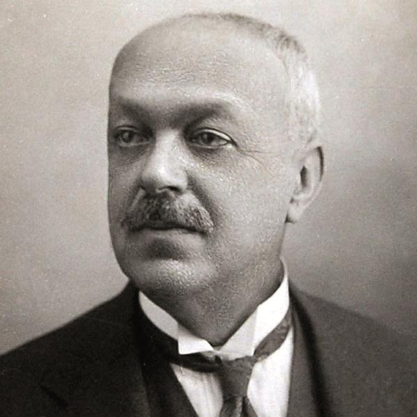
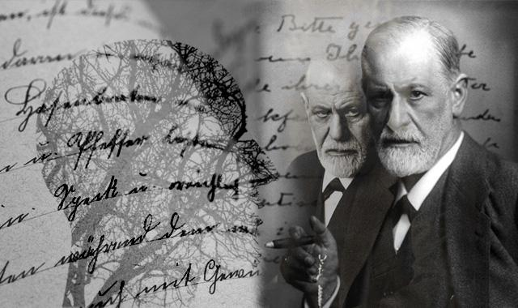
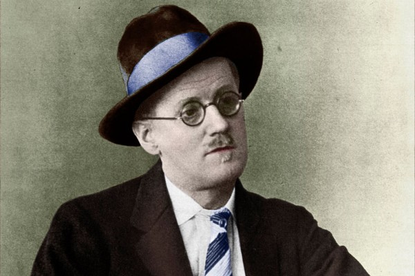
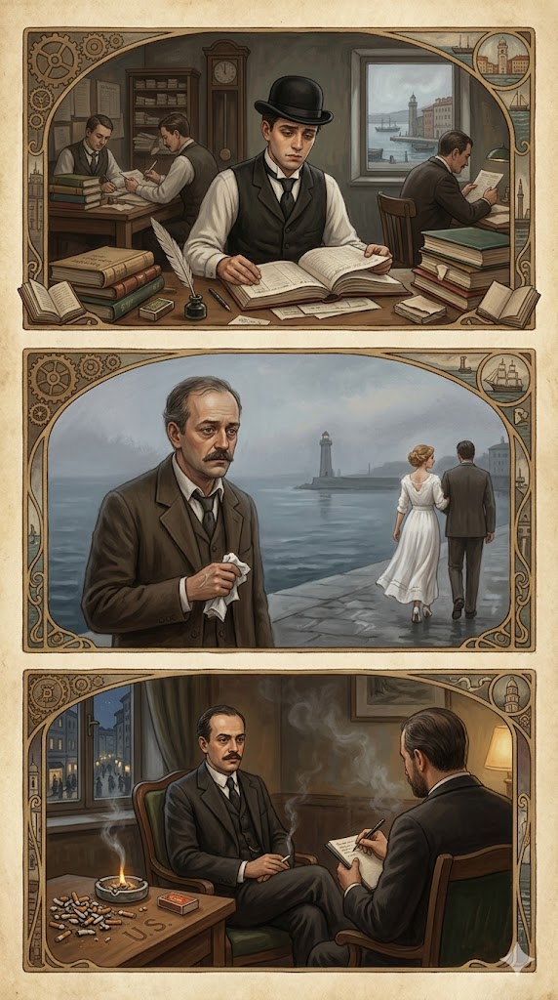

Il mio rapporto con la letteratura
L'italiano è una disciplina che ci accompagna fin da quando siamo piccoli, attraverso le prime storie che ci venivano raccontate. Nel corso del tempo e con il progredire dei miei studi, ho imparato ad apprezzarla sempre di più, scoprendo come le grandi opere letterarie non siano soltanto racconti del passato, ma racchiudano metafore profonde capaci di parlarci ancora oggi, anche di fronte alle sfide tecnologiche più moderne.

Ritratto di Italo Svevo
Italo Svevo: un autore sospeso tra due culture
Nato nel 1861 a Trieste, all'epoca parte dell'Impero Austro-Ungarico, l'autore riflette profondamente la natura mitteleuropea della sua città natale, un vero e proprio crocevia culturale ed economico dell'Europa di mezzo. Questa identità "ibrida", sospesa tra la cultura italiana e quella tedesca, si manifesta chiaramente fin dal suo pseudonimo letterario, Italo Svevo, scelto per fondere la sua radice italiana con quella germanica (da "Svevia"), in contrasto con il suo nome anagrafico, Aron Hector Schmitz (Ettore Schmitz).
La sua vita fu segnata da una complessa dinamica tra dovere e passione: costretto a interrompere gli studi commerciali, lavorò inizialmente in banca e, successivamente, entrò nell'azienda di vernici del suocero, diventando a tutti gli effetti un uomo d'affari. Nonostante gli impegni commerciali, Svevo non abbandonò mai la scrittura, vivendo appieno la transizione e il passaggio dalla letteratura dell'Ottocento a quella contemporanea.
Il contesto europeo: l'influenza di Joyce e la Psicoanalisi
Svevo è un intellettuale profondamente influenzato dal panorama culturale europeo del suo tempo. Fondamentale per la sua maturazione fu l'incontro a Trieste con lo scrittore irlandese James Joyce, che ne riconobbe il talento e lo spronò a proseguire l'attività letteraria.
Parallelamente, Svevo si impose come uno dei primi autori in Italia a esplorare e assimilare la psicoanalisi di Sigmund Freud. La nuova scienza medica non viene vista da Svevo come una terapia per guarire, bensì como uno straordinario strumento narrativo per esplorare il mondo della psiche, della mente e dell'inconscio. I suoi romanzi diventano così lo specchio in cui si riflettono i pensieri profondi, i dubbi e le insicurezze umane, segnando il definitivo tramonto del romanzo ottocentesco a favore di una narrazione focalizzata sulla complessa psiche dei personaggi.


Freud e Joyce
I grandi temi sveviani: l'Inettitudine e l'Uomo Moderno
Il nucleo tematico della produzione sveviana ruota attorno al concetto di inettitudine. L'inetto è un uomo incapace di trovare il proprio posto nel mondo, intrappolato in una specie di blocco psicologico ed emotivo che gli impedisce di prendere decisioni e di agire in modo sicuro. I personaggi di Svevo sono strutturalmente indecisi e insicuri.
Tuttavia, l'inettitudine non rappresenta un mero limite individual o patologico; al contrario, essa si configura come lo specchio delle contraddizioni della vita moderna. L'inetto, nella sua incapacità di adattarsi a una società borghese basata sul profitto e sull'efficienza, diventa paradossalmente l'unico individuo lucido, capace di analizzare la realtà senza le maschere e le ipocrisie del suo tempo.
Le Opere: l'evoluzione dell'Eroe Sveviano
Una Vita (1892)
Il romanzo d'esordio introduce il personaggio di Alfonso Nitti, un impiegato bancario che sogna il riscatto sociale e intellettuale, ma finisce per sentirsi costantemente bloccato dalla propria insicurezza. Alfonso incarna il prototipo dell'inetto, un vero e proprio alter ego dell'autore.
Senilità (1898)
Il secondo romanzo ha per protagonista Emilio Brentani, un uomo anch'egli bloccato dall'inettitudine, che si innamora di una donna idealizzandola eccessivamente e non riuscendo più a liberarsi da questa ossessione. Il titolo stesso, "Senilità", non indica l'età anagrafica, bensì una conditione di stanchezza, delusione e "vecchiaia interiore" che paralizza la vita di Emilio.
La Coscienza di Zeno (1923)
Considerato il capolavoro assoluto di Svevo, il romanzo ha come protagonista Zeno Cosini, un inetto ricco di insicurezze. L'opera è strutturata in modo rivoluzionario come una sorta di diario scritto da Zeno su consiglio del suo psicoanalista, il Dottor S. Il romanzo adotta una narrazione in prima persona. Al centro del testo emerge il conflitto interiore e le contraddizioni dell'animo umano. Un tema chiave è quello dell'ultima sigaretta: il vizio del fumo e il continuo, fallimentare tentativo di smettere diventano il simbolo perfetto dell'incapacità dell'uomo moderno di cambiare la propria vita, anche quando lo desidera ardentemente. Sebbene l'opera fosse stata inizialmente accolta con freddezza e definita "strana" dalla critica italiana, il romanzo ottenne il meritato successo solo grazie al fondamentale intervento di James Joyce, che ne colse il valore e lo lanciò sulla scena culturale europea.

Edizione Storica delle Opere